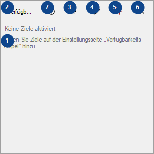
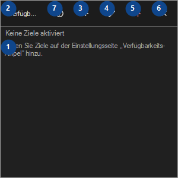

Verfügbarkeits-Ampel
Zweck
Lesen Sie die nummerierten Erklärungen, wählen Sie die benötigten Werte und fahren Sie mit dem Fensterbefehl fort.


Reihenfolge
Lesen Sie die nummerierten Erklärungen, wählen Sie die benötigten Werte und fahren Sie mit dem Fensterbefehl fort.
Elemente
1. Verfügbarkeits-Ampel
Wählen Sie den Wert zur benachbarten Beschriftung oder geben Sie ihn ein. Prüfen Sie ihn vor dem Fortfahren.
Ihre Tastenkürzel2. Verfügbarkeits-Ampel
Wählen Sie den Wert zur benachbarten Beschriftung oder geben Sie ihn ein. Prüfen Sie ihn vor dem Fortfahren.
Ihre Tastenkürzel3. Ziel hinzufügen..
Nutzen Sie diesen Befehl für die genannte Aktion. Lesen Sie eine Bestätigung, bevor Sie zustimmen.
Ihre Tastenkürzel4. Ziele bearbeiten..
Nutzen Sie diesen Befehl für die genannte Aktion. Lesen Sie eine Bestätigung, bevor Sie zustimmen.
Ihre Tastenkürzel5. Immer im Vordergrund
Nutzen Sie diesen Befehl für die genannte Aktion. Lesen Sie eine Bestätigung, bevor Sie zustimmen.
Ihre Tastenkürzel6. Ausblenden
Nutzen Sie diesen Befehl für die genannte Aktion. Lesen Sie eine Bestätigung, bevor Sie zustimmen.
Ihre Tastenkürzel7. Hilfe (F1)
Nutzen Sie diesen Befehl für die genannte Aktion. Lesen Sie eine Bestätigung, bevor Sie zustimmen.
Ihre Tastenkürzel